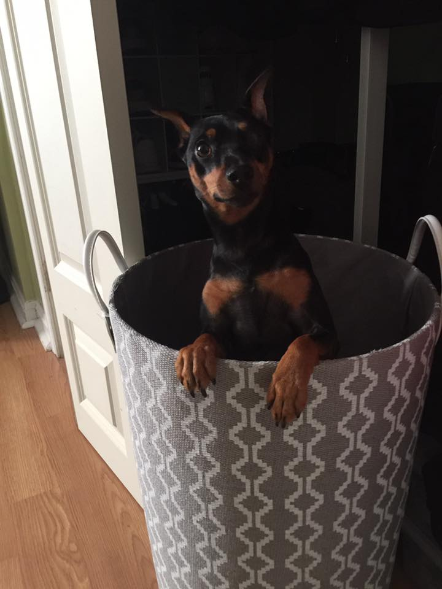

WHO?
This is Frankie, he's a 3 year old Minature Pinscher that we rescued from the RISPCA in Rumford, Rhode Island. He goes by many different aliases such as; Frankenstein, Stein, Goofy, and The Frankster.
This is Frankie, he's a 3 year old Minature Pinscher that we rescued from the RISPCA in Rumford, Rhode Island. He goes by many different aliases such as; Frankenstein, Stein, Goofy, and The Frankster.

Frankie enjoys many things such as going for rides in the car, hanging out at the park, and going for long walks, but one of his favorite activities has to be keeping an eye on the neighborhood! He does his best to keep us all safe and for that we say, THANK YOU!
When we saw Frankie, we knew he'd be the perfect addition to our small family. It hasn't always been easy, and he certainly does frustrate us at times, but we wouldn't change a thing. Here's to you, Frankenstein!